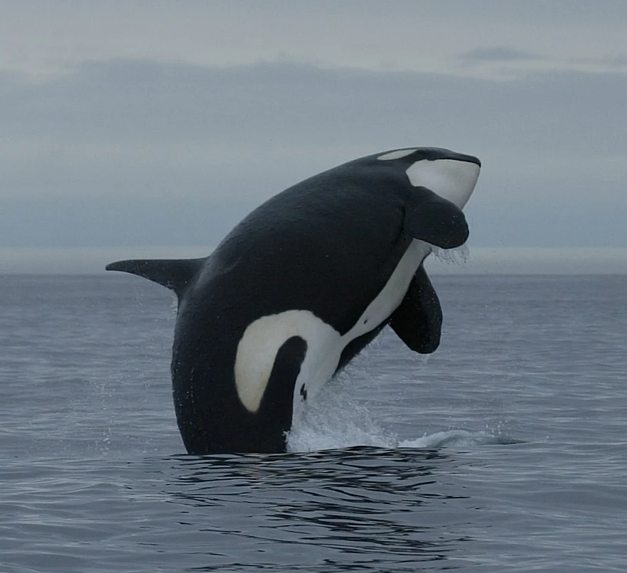
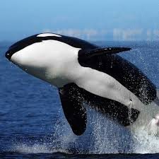

.gif) Home
AboutUs
Gallery
Contact
Home
AboutUs
Gallery
Contact
Web development is the process of building and maintaining websites and applications, combining creative design with technical programming.


Orca
 Orcas, often called killer whales, are actually the largest members of the dolphin family, but young or small orcas—like calves—are much tinier compared to adults. Orca calves are usually born around 2.4 meters (8 feet) long and weigh about 180 kilograms, which is small compared to full-grown males that can reach up to 9.8 meters and weigh 5,500 kilograms. Despite their size at birth, calves are strong swimmers and stay close to their mothers for protection and nursing. Orcas live in tight family groups called pods, and even the smallest members play an important role in learning hunting skills and social behaviors. Their distinctive black-and-white coloring is present from birth, making them recognizable even as small calves.
Orca
 Orcas, often called killer whales, are actually the largest members of the dolphin family, but young or small orcas—like calves—are much tinier compared to adults. Orca calves are usually born around 2.4 meters (8 feet) long and weigh about 180 kilograms, which is small compared to full-grown males that can reach up to 9.8 meters and weigh 5,500 kilograms. Despite their size at birth, calves are strong swimmers and stay close to their mothers for protection and nursing. Orcas live in tight family groups called pods, and even the smallest members play an important role in learning hunting skills and social behaviors. Their distinctive black-and-white coloring is present from birth, making them recognizable even as small calves.